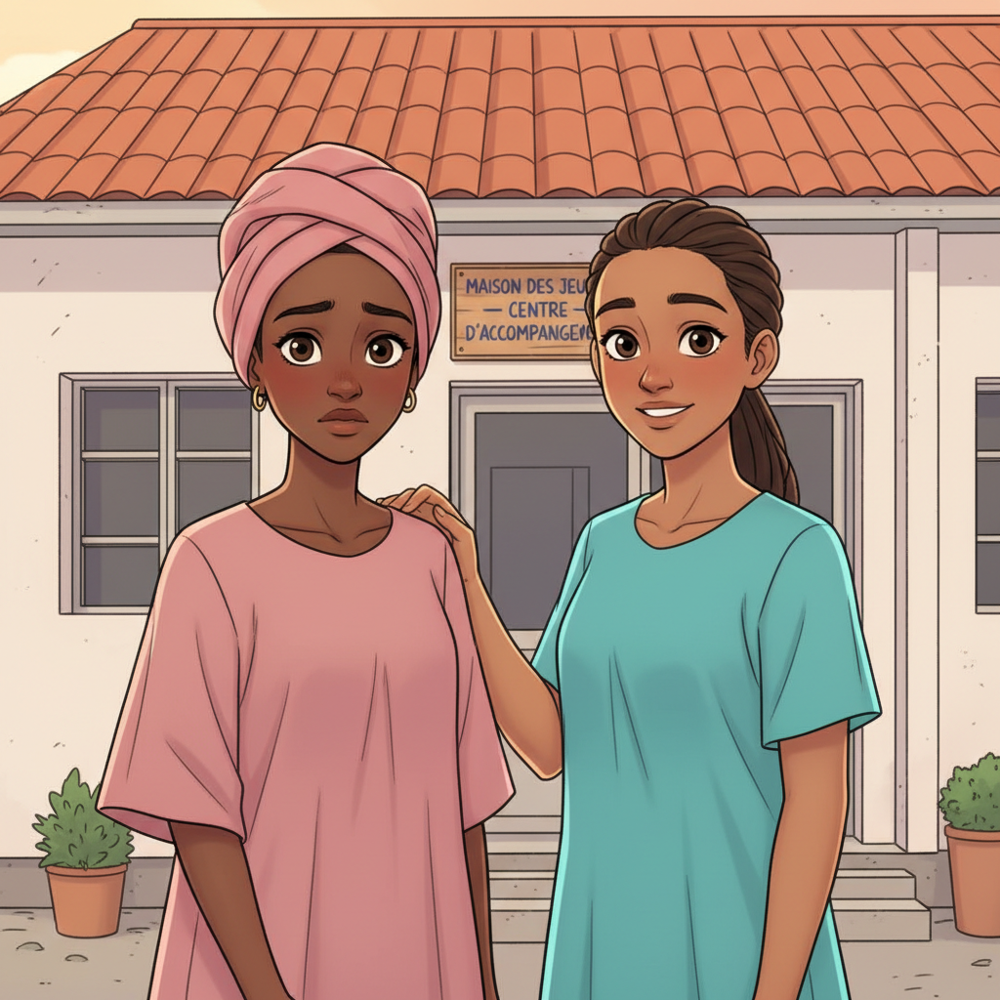
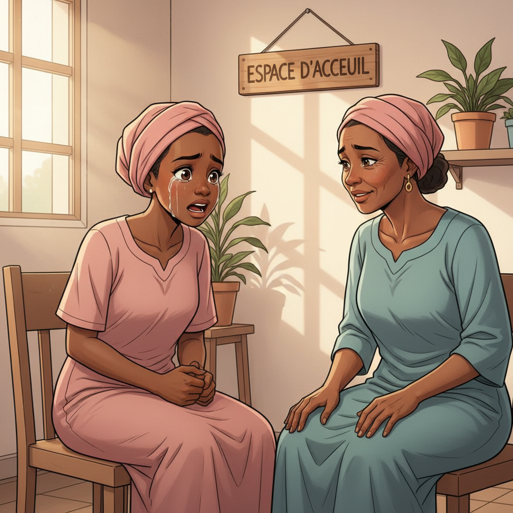
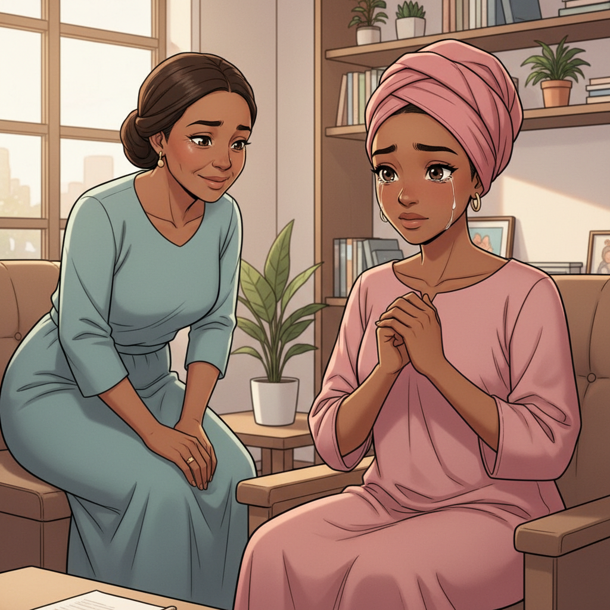
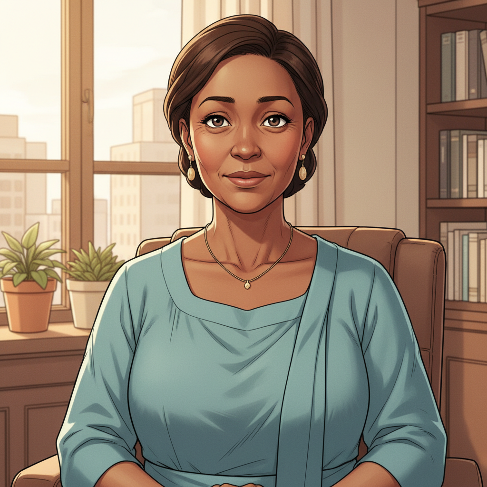
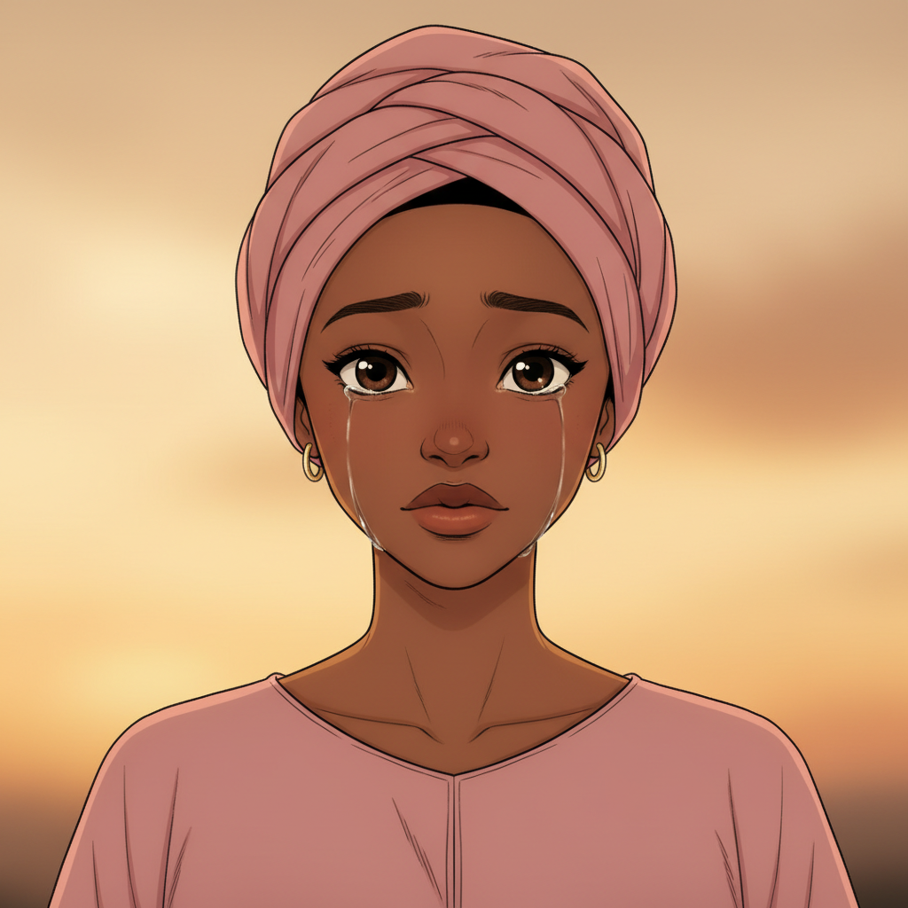
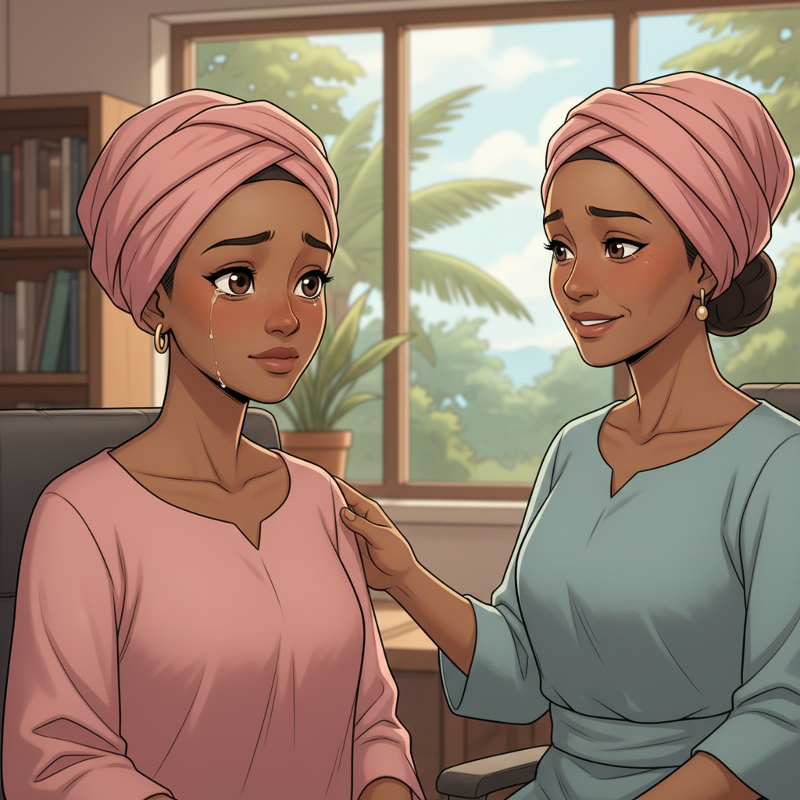
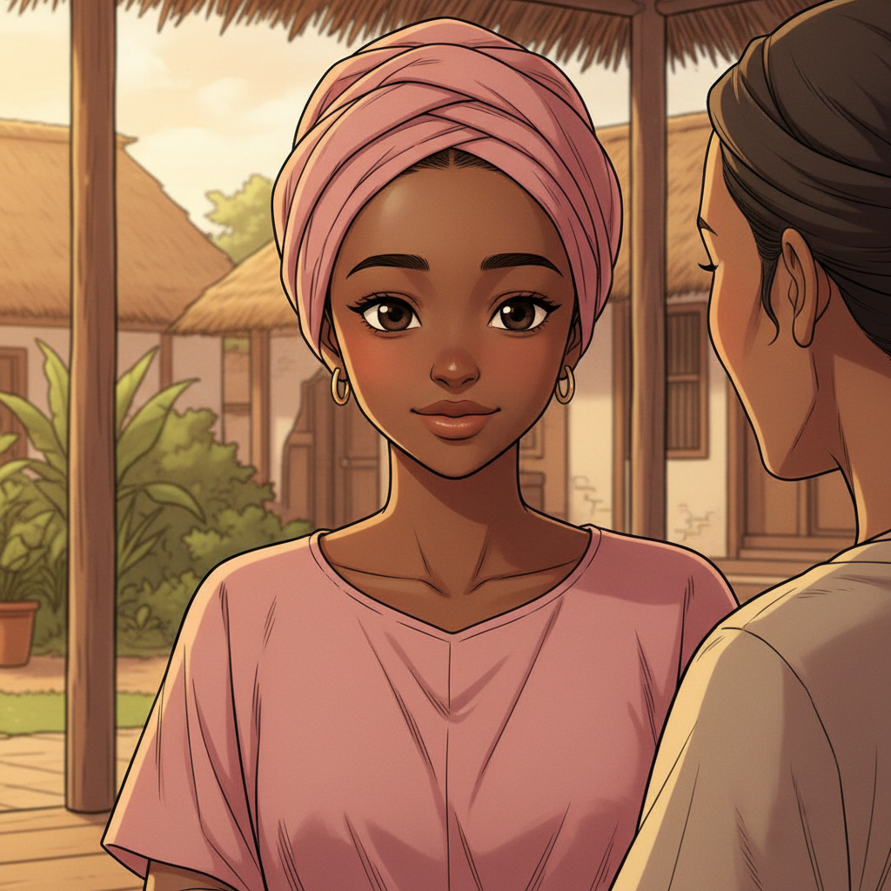
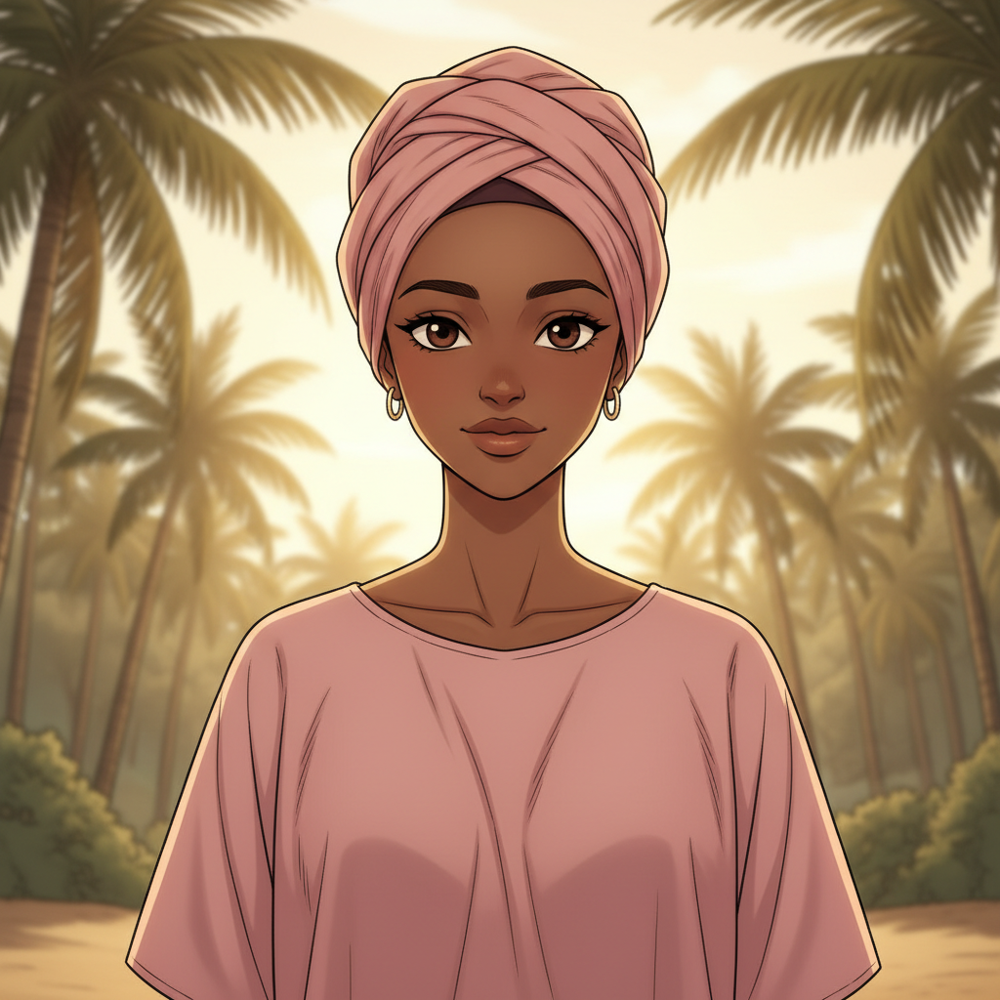
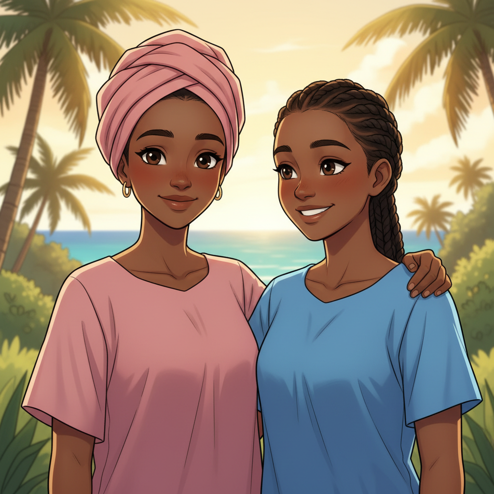
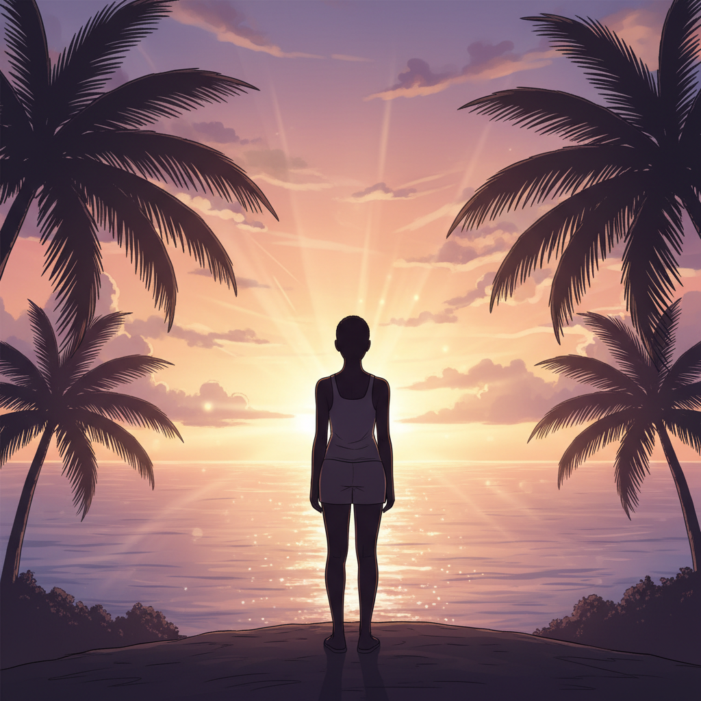

Le Courage d'Amina
ÉPISODE 5 — FINAL
Le Courage de se Relever

"Demander de l'aide n'est pas une faiblesse. C'est parfois l'acte le plus courageux qu'on puisse faire."

"Elles sont arrivées devant le local de l'association. Amina a hésité un instant."
Et si personne ne me croit... Et si je suis trop honte...
Je suis là. On y va ensemble.

"À l'intérieur, une femme les a accueillies avec un regard calme et doux."
Bonjour. Je m'appelle Mariama. Vous êtes les bienvenues ici. Asseyez-vous.
*clic*

"Amina a raconté son histoire une nouvelle fois. Madame Mariama a écouté. Pas une fois elle n'a interrompu."

Ce que tu as vécu a un nom. Manipulation. Emprise. Exploitation. Et ce n'est pas toi la coupable. C'est celui qui a abusé de ta confiance.

Ce n'est pas ma faute. Je n'ai rien fait de mal. J'ai été piégée.

Tu as le droit d'être protégée. Et nous sommes là pour ça. Tu n'auras plus à affronter ça seule.

"Les jours ont passé. Puis les semaines. Amina a été accompagnée, écoutée, soutenue. Le chemin était long. Mais elle n'était plus seule."

"Petit à petit, Amina a retrouvé sa voix. Son sourire. Sa dignité."
Je me souviens de qui je suis. Je me souviens de mes rêves.
heh...

"Zali était toujours là. Certaines amitiés traversent tout."
Merci. Pour tout.
C'est ça, les amies.

Un jour, je réussirai. Et personne ne pourra m'arrêter.
Besoin d'aide ?
- Mlezi Maoré — PSP
Parcours de Sortie de Prostitution à Mayotte - EVARS
Espace de Vie Affective, Relationnelle et Sexuelle - PMI
Protection Maternelle et Infantile - 119
Allô Enfance en Danger — appel gratuit, 24h/24